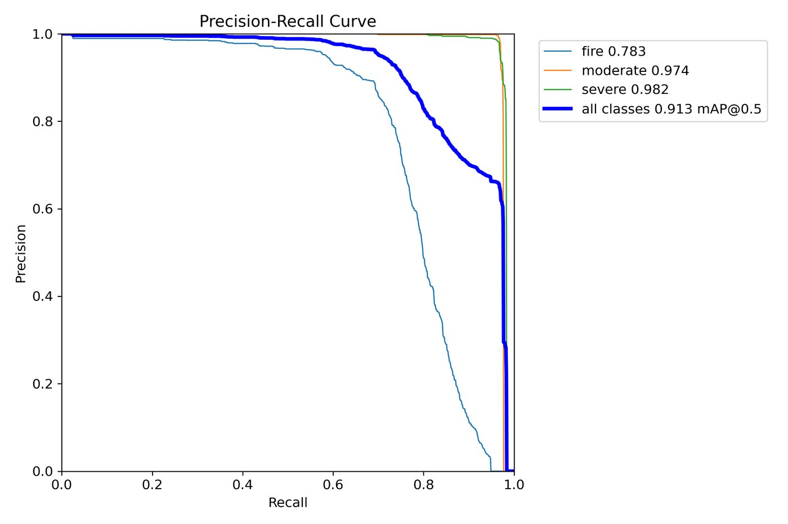
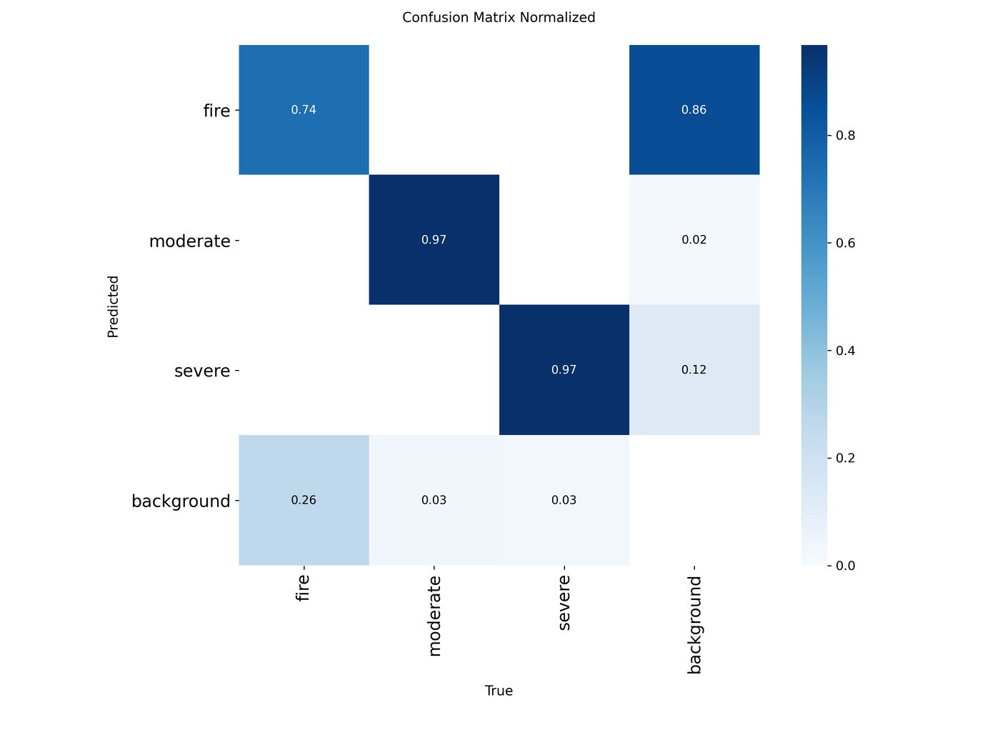
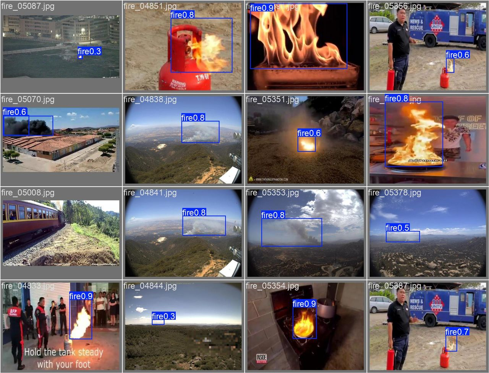
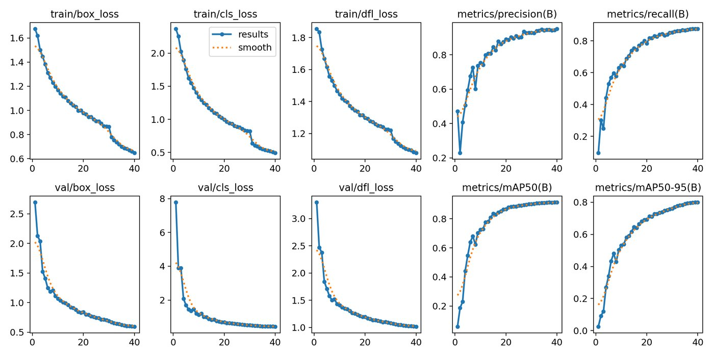

01The problem
Road accidents are often reported late, by whoever happens to pass by, and the first report rarely says how serious the scene is. The goal was a system where an operator can upload CCTV images or video, have a model flag accidents and their severity, and notify responders with evidence.
The model supports a human decision; it is not an emergency dispatch or a medical assessment. That shaped the design: every detection is stored with its confidence, boxes and media so a person can review it.
02Data
A 3-class road-scene dataset: fire, moderate and severe. I trained YOLOv12n for 40 epochs at 640 px and evaluated it once on a held-out test set of 1,800 images containing 2,443 objects.
03Approach
- Train the detector. Fine-tuned YOLOv12n (Ultralytics, PyTorch) for 40 epochs at 640 px, and kept the training curves, PR curves and confusion matrix with the model bundle.
- Serve it securely. A FastAPI backend with JWT role-based authentication. Images return annotated results immediately; videos run as background jobs with progress polling.
- Record every incident. SQLAlchemy and Alembic migrations on MySQL store events, confidence, boxes, media paths, statuses and audit information.
- Alert responders. Optional SMTP email and WhatsApp delivery send annotated frames, with a mock mode for safe demos. Gemini can write the incident assessment, with a deterministic fallback when no API key is set.
- Show it to operators. A React, Vite and Tailwind dashboard for history, alerts, analytics and generated assessments.
- Package and test. Docker Compose runs MySQL, the backend and the frontend together; Pytest covers the API, security, alerts and workflows.
04Results
| Class | Precision | Recall | mAP@50 | mAP@50-95 |
|---|---|---|---|---|
| All classes | 92.5% | 86.8% | 89.9% | 79.0% |
| severe | 96.9% | 99.0% | 99.4% | 93.2% |
| moderate | 97.6% | 96.9% | 97.3% | 94.3% |
| fire | 83.0% | 64.3% | 72.9% | 49.5% |
Scores are from the held-out test split, not the validation set used during training.
Where it falls short. Fire is the weakest class at 64.3% recall: smoke and flames have no clear box edges and vary a lot from scene to scene. Collecting more fire images is the next improvement.
The charts below come from the validation set the training run monitored (0.913 mAP@50). The headline numbers above come from the separate held-out test set.




05System and deployment
Everything starts with docker compose up. Named volumes keep the database and generated media between runs.
06Limitations
- Built for academic demonstration and controlled local deployment, not live emergency dispatch.
- Video jobs are held in memory, which suits a single-process demo but not a multi-worker production setup.
- Email and WhatsApp delivery depend on configuration and can fail; delivery status is stored so it can be checked.